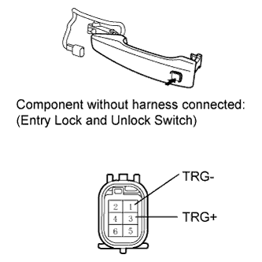

ENTRY LOCK AND UNLOCK SWITCH (for Rear) > INSPECTION |
| 1. INSPECT ENTRY LOCK AND UNLOCK SWITCH |
 |
Disconnect the connector.
Remove the outside handle.
Measure the resistance according to the value(s) in the table below.
| Tester Connection | Switch Condition | Specified Condition |
| 1 (TRG-) - 3 (TRG+) | Lock switch not pushed (OFF) | 10 kΩ or higher |
| 1 (TRG-) - 3 (TRG+) | Lock switch pushed (ON) | Below 1 Ω |